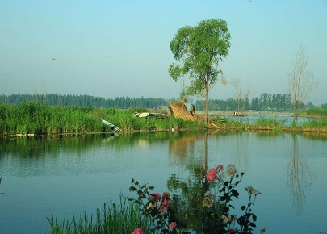
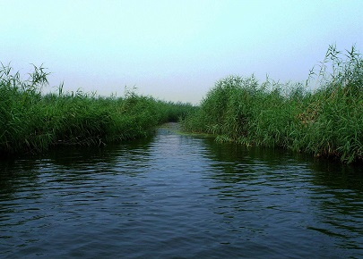

morly旅游网
白洋五日看回花，馥馥莲芳入梦来
这是明代诗人鹿善继在白洋淀赏莲时留下的句子，品起来十分有味儿。白天看荷，兴犹未尽，荷香入梦，堪称典范。白洋淀的荷花为华北之最，令世人青睐。为把白洋淀的荷花文章做大做好，安新县委、县政府投资3660万元，在荷花淀内建起了占地2000亩的荷花大观园是以赏荷为主题的景区。它一改以往白洋淀荷花品种单调的现状，荟萃了我国南北各地216种荷花品种，其中名贵品种156个，野生品种60个，设计日接待游客4000-5000人次。成为我国目前面积最大、品种最齐全的荷花展示基地。该园由“五区，一 塘”组成，中区为名贵荷花观赏区，栽种156个中外珍奇品种；东区为登高观景区，建有观景山，山上有观景凉亭，北山脚下有休闲垂钓处，南山脚下有沙滩游泳场；南区为度假休闲区，建有别墅式套房；西区为服务区，设有水生植物商品一条街和泊船码头；北区为餐饮区，设有配餐、餐饮长廊、生态凉亭；“一塘”指大观园中间的千亩荷塘，塘内千亩水面上引进适合深水栽种的荷花60种，中设浮桥、拱桥、栈桥、总长度为1560米，有20座观赏亭镶嵌其上、48个休闲湾供游人划舟荡浆习习吹来的爽风，裹着阵阵荷香，沁人肺腑，使人陶醉；“花种不一乱人眼，锭期不定令人骄”。 白洋淀文化苑 点评：王牌景点 人文与自然结合清代康熙皇帝曾40次到白洋淀巡幸、水围，乾隆皇帝也多次驾临白洋淀。为驻跸休憩需要，在郭里口、赵北口、端村、圈头建有四座水围行宫。本行宫是按照历史资料仿建，宫内有千岁宫、万岁宫、书房、御膳房、朝房、回廊。康熙皇帝以“溪光映带”赞美大淀风光，乾隆皇帝感慨题诗：“万柳跋长堤，江乡景重题。谁知今赵北，大似向杭西。
白洋淀素有“华北明珠”之称，亦有“北地西湖”、“北国江南”之誉，是著名的国家AAAA级旅游景区。
白洋淀文化苑
白洋淀文化苑是集悠久历史文化，优美生态文化，革命传统文化，淳朴民俗文化为一体的大型旅游景观。白洋淀雁翎队纪念馆以珍贵的历史照片和实物再现了水上游击战的锋火硝烟；康熙水围行宫、敕赐沛恩寺向世人诉说着人文历史的沧桑和久远；芦花水寨丰富多彩的民俗活动，独具水乡特色的仿古民居把游客带入了如诗如梦的画卷；迎风傲挺的西淀风荷，垂柳依依的东堤烟柳以青春的张力吟唱着“天人合一，回归自然”的生命乐章。如果说白洋淀是顶美丽的王冠，那么白洋淀文化苑便是王冠上瑰丽的明珠。她以宁静幽雅、风情独具的气质喜迎八方游客光临。异国风情园 点评：观赏娱乐白洋淀异国风情园，位于白洋淀安新景区内，北临鸳鸯岛，南临休闲岛，占地面积30亩，园内有地道纯真的泰国舞蹈、勇猛骠悍欧洲女子泥跤、触目心惊的泰国斗鳄、出神入化的海豹、狮子捕食表演等。游人还可亲临海豹区投喂海豹、参与险渡鳄鱼湖、享受刺激，体味浪漫，趣味多多兴致浓浓。
白洋淀异国风情园
白洋淀异国风情园北靠鸳鸯岛、南临休闲岛，占地一万三千平方米，投资一千三百多万元。是一个集高空达瓦孜表演、泰拳搏击表演、泰国民间歌舞、欧洲女子摔跤、鳄鱼表演、非洲狮子猎捕、神秘小屋水倒流、攀岩弹跳于一体的娱乐性、参与性极强的风情娱乐园。白洋淀之窗 点评：白洋淀自然历史博物馆位于河北省安新县白洋淀之风景秀丽的鸳鸯岛上.本馆以祥 实的历史资料,珍贵的历史照片和丰富的实物,真实的展示了白洋淀悠久的 历史文化,生动的再现小兵张嘎和淀上神兵"雁翎队"的光辉足迹,详细的介绍 独具特色的淀区文化.朴实淳厚渔民生活,充分地展现白洋淀的自然资源和水 乡美景.
内容整理至网络，如有侵权，请联系我们！1255394075@qq.com